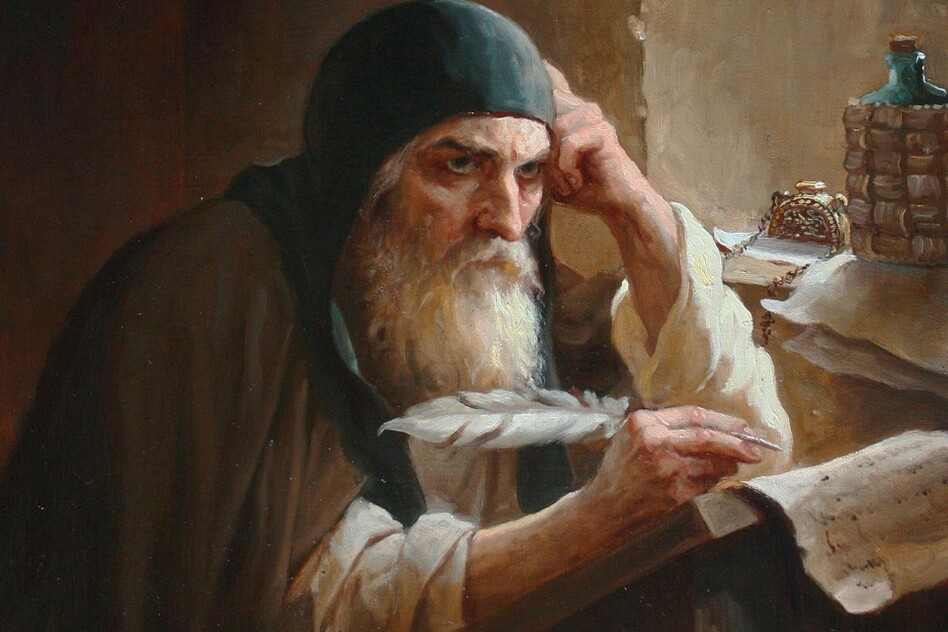
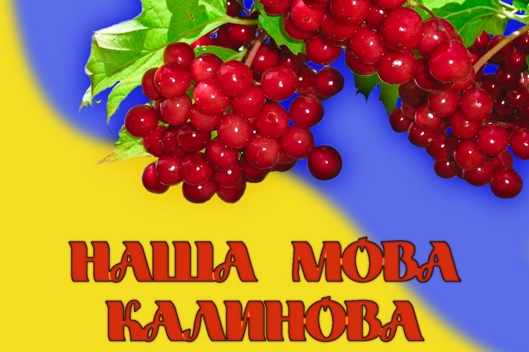
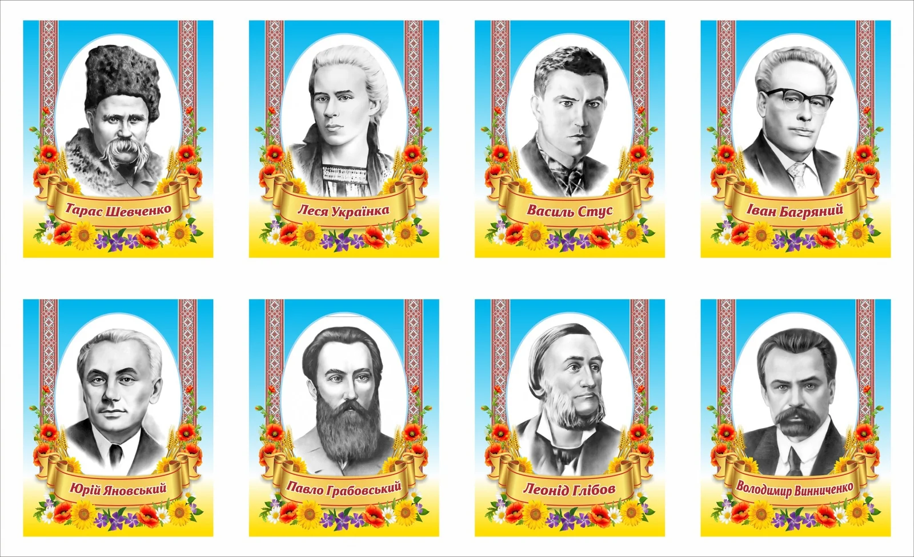

📖 Що це за свято?
День української писемності та мови — свято, яке об'єднує всіх, хто любить рідне слово. Воно присвячене Нестору Літописцю — першому українському історику.
Цікавий факт: У 2019 році свято офіційно перенесли на 27 жовтня, але традиційно ми відзначаємо його 9 листопада — у день вшанування Нестора.

📜 Історія української мови
Українська мова має багатолітню історію. Від перших літописів до сучасних чат-ботів!
Перші літописи у Київській Русі
Іван Федоров друкує перші українські книги
Шевченко, Леся Українка, Франко — нова літературна мова
Українська в інтернеті, ІТ, кіно та телебаченні
📜 Як українська мова перемагала часи
Коротка історія про те, як наша мова виживала, коли її хотіли знищити, і стала нашою суперсилою!
Перша згадка
Візантійський історик записав українські слова «мед» і «страва». Це перші документовані українські слова в історії!
Перший буквар
Іван Федоров друкує перший український «Буквар». До наших днів зберігся лише один примірник — його знайшли в Римі в 1927 році!
Перше спалення книг
Московський цар наказав спалити українське «Учительне Євангеліє». Книгу знищили лише через мову, якою вона була написана!
Перша заборона
Петро I заборонив друкувати книги українською мовою. Указ наказував, щоб книги були «ніякої різниці й окремого наріччя» від російських.
Валуєвський циркуляр
Влада офіційно заявила: «жодної окремої малоросійської мови не було і бути не може». Вони просто не визнавали існування нашої мови!
Емський указ
Заборонено друкувати та ввозити з-за кордону будь-які українські книги. Мову намагалися задушити повністю.
Вилучення літери «Ґ»
Літеру «Ґ» оголосили «буржуазною» та вилучили з абетки. Повернули її лише 1991 року, коли Україна стала незалежною!
Незалежність України
Українська мова стає державною у власній країні. До цього моменту її намагалися знищити 134 рази за чотири століття. Але вона вистояла! 💪
Наша суперсила
Українська мова — одна з 30 найпоширеніших у світі. Нею говорять 45 мільйонів людей. І це завдяки вам — тим, хто говорить, читає й пише українською!
134 рази намагалися знищити українську мову.
Але вона вижила. Вона перемогла.
Бо мова — це наша суперсила! 🇺🇦
📊 Цікаві факти про мову
7-ме місце у світі
за милозвучністю серед усіх мов
~256 000 слів
у словнику української мови
Давня слов'янська
одна з найстаріших слов'янських мов
Діалекти
гуцульський, лемківський, поліський та ін.

🧩 Гра «Знайди пару: староукраїнські слова»
Спробуй знайти правильне значення кожного слова!
🌟 Зірки української літератури
І чужому научайтесь, й свого не цурайтесь
— Тарас ШевченкоContra spem spero!
— Леся УкраїнкаЯ син народу, що вгору йде
— Іван Франко
📋 Перевір свої знання
🧠 Розгадай ребус
📚 Мовознавчий квіз «Знавець староукраїнської»
Перевір свої знання! Обери правильне значення для кожного староукраїнського слова.
💪 Наша суперсила — українська мова!
"Любіть і бережіть українську мову — це наш найбільший скарб!"